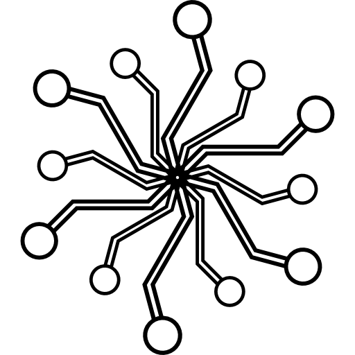
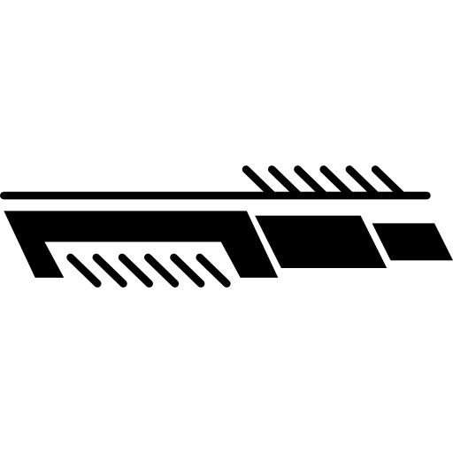
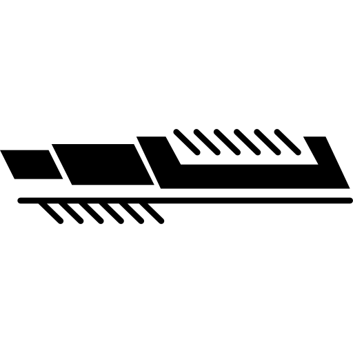
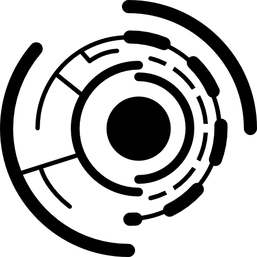

What is this place you ask? Learn Logic lets you learn about circuit design and computer architecture through building your own CPU components.

The lessons start with basic logic gates, which are the building blocks for circuitry. From there, you’ll see how gates combine to make small circuits. These are like more complex units of blocks that can be combined to make an even larger structure. This layering continues and allows you to create the different parts of a CPU.

Another way to think of it is as cooking, for example making pasta -yum! To make the sauce you’ll need some basic building blocks: tomatoes, herbs, garlic, and onion. Then you can combine them to make the sauce. Next, put together the pasta (pretend we’re being fancy and made it from scratch).

Then you can combine these units to build something larger. In this case a delicious (and fancy) pasta dish!
Thanks for coming to Learn Logic! Be sure to join and let the creation begin. We hope you’ll learn a lot and have fun building your own dishes – er – circuits!
